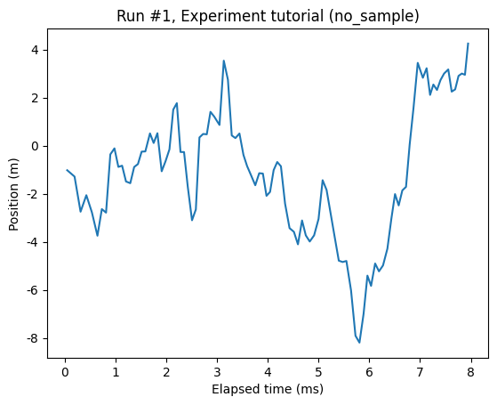

This page was generated from
docs/examples/DataSet/Measuring X as a function of time.ipynb.
Interactive online version:
 .
.
Measuring X as a function of time
Sometimes we’d like to measure something as a function of elapsed wall clock time. QCoDeS provides a convenient default way of doing such a measurement, namely by using the ElapsedTimeParameter.
The main utility of having a default way of measuring time is the uniformity in data of different experiments.
[1]:
import os
import numpy as np
from qcodes.dataset import (
Measurement,
initialise_or_create_database_at,
load_or_create_experiment,
plot_dataset,
)
from qcodes.parameters import ElapsedTimeParameter, Parameter
Logging hadn't been started.
Activating auto-logging. Current session state plus future input saved.
Filename : /home/runner/.qcodes/logs/command_history.log
Mode : append
Output logging : True
Raw input log : False
Timestamping : True
State : active
Qcodes Logfile : /home/runner/.qcodes/logs/240704-14909-qcodes.log
Prepatory footwork: setup database and experiment
[2]:
initialise_or_create_database_at(os.path.join(os.getcwd(), 'x_as_a_function_of_time.db'))
load_or_create_experiment('tutorial', 'no_sample')
[2]:
tutorial#no_sample#1@/home/runner/work/Qcodes/Qcodes/docs/examples/DataSet/x_as_a_function_of_time.db
-----------------------------------------------------------------------------------------------------
The measurement itself
We’ll measure some Brownian motion. We set up a parameter for the noise.
[3]:
noise = Parameter('noise',
label='Position',
unit='m',
get_cmd=lambda: np.random.randn())
time = ElapsedTimeParameter('time')
[4]:
meas = Measurement()
meas.register_parameter(time)
meas.register_parameter(noise, setpoints=[time])
[4]:
<qcodes.dataset.measurements.Measurement at 0x7f0db0579d10>
[5]:
with meas.run() as datasaver:
pos = 0
time.reset_clock()
for _ in range(100):
pos += noise()
now = time()
datasaver.add_result((noise, pos), (time, now))
dataset = datasaver.dataset
Starting experimental run with id: 1.
[6]:
axs, cbs = plot_dataset(dataset)

[ ]: